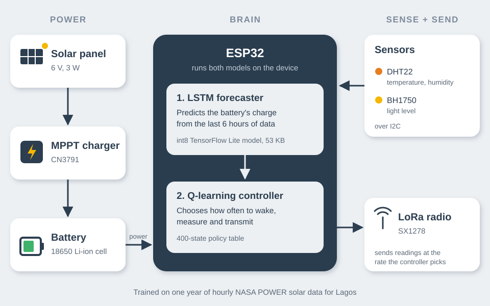

01
Final-year project · 2026
ML-Based Power Management for a Solar-Powered IoT Node
Python · TensorFlow · TensorFlow Lite Micro · ESP32 (C++) · Q-learning
Small solar-powered sensors either die on cloudy days or waste energy measuring too often. I built a sensor node that predicts its own battery charge and decides how often to take readings, so it keeps running without wasting power.
- Built a battery simulator on a year of hourly NASA POWER solar data for Lagos.
- Trained an LSTM to forecast battery charge and a Q-learning agent to choose the duty cycle.
- Converted the model to int8 and ran it on a real ESP32 with DHT22 and BH1750 sensors.
- 90%
- lower forecast error than a simple baseline
- 0
- battery depletions in a year-long simulation
- 53 KB
- model size on the ESP32
What went wrong and how I fixed it
The first LSTM used an operation the microcontroller library doesn't support, and inference kept crashing until I traced it to the ESP32's default task stack being too small. I retrained a smaller 6-hour model so it would fit. The int8 model is less accurate near full charge, a known effect of quantisation that I measured and documented.
